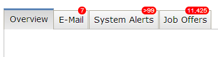
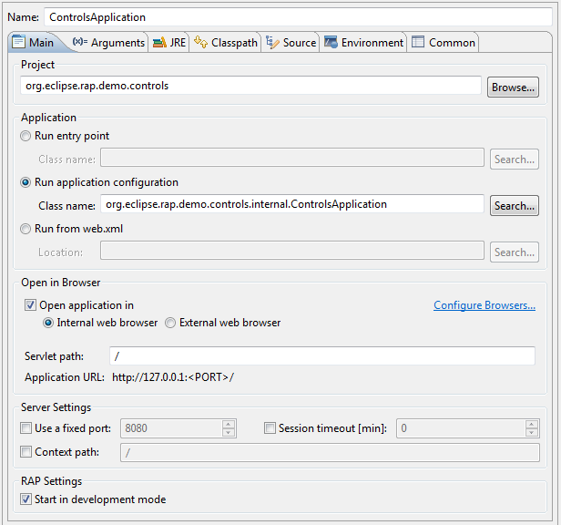

The TabItem widget now supports badges:
Those badges can be set using a data key:
tabItem.setData( RWT.BADGE, "23" );
The given string is displayed at the top-right of the item, overlaying it's border and part of the padding/margin areas. If the top padding + border + margin do not provide enough space to display the badge, it will be cut off. The theming of Widget-Badge and TabItem need to take badges into account if they are used. (This is already the case for the RAP default and business themes.)
To adjust the look of badges (see above), the Widget-Badge element can be used. It currently supports the properties font, color, background-color, border and border-radius.
The TabItem element now supports the margin property. It's default values differ slightly from the previous hard-coded values to accommodate the new badges.
text-overflow
Table and Tree items (and columns as well) now support the property text-overflow. When set to ellipsis, texts that don't fit into their cell will end with “…” instead of being cut off. The default RAP theme already has this setting. For custom themes, the default value is clip.
The ProgressBar has been partially rewritten to use CSS3 properties instead of vector graphics. As a result, the indicator is now layouted more precisely when the bar is nearly empty or nearly full, but as a side-effect the ProgressBar-Indicator theming no longer supports the border property. It was not used by any of the themes included in RAP, so it won't change how the bar looks by default.
RAP 3.0 will require Internet Explorer 9 or above. Dropping support for Internet Explorer 8 allowed us to remove thousands of lines of JavaScript code and will also enable more HTML5/CSS3 feature in the future. For Windows Vista, IE9 can be manually installed. For Windows 7, IE10 is installed with Service Pack 1 and IE11 can be installed manually. Windows 8 has IE10 as it's default browser, which is upgraded to IE11 with Windows 8.1. If you still target Windows XP, you have to use either Firefox or Google Chrome.
RWT Launcher now allows you to run RWT application from its ApplicationConfiguration class. You can do this by specifying the ApplicationConfiguration class in the launcher main tab, from the file/project context menu or directly from the editor.
Most of the deprecated API have been removed. We will provide migration guide (similar to 2.0) in the next milestones.